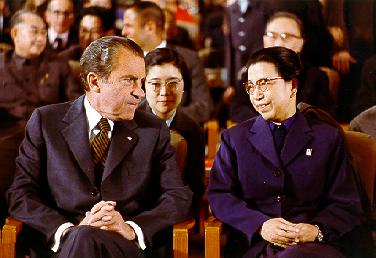

面对“样板戏，五四后中国文艺唯一真正开创意义的成就！”这样的题目，肯定很多人不服。因为这样一来，鲁迅、雷雨、黄河之类的文化符号就有了被侵犯的可能。鲁迅、雷雨、黄河等等无疑是有价值的，但站在前无古人，后无来者的角度，他们的开创意义依然是有限的。在这一点上，样板戏是五四后中国文艺唯一真正开创意义成就的说法，并不是完全没有意义的。
在时代性、典型性以及开创性上，样板戏无与伦比。你可以不喜欢样板戏的风格，但你无法否则其时代性、典型性以及开创性。而且，最重要的一点是，在五四以后西风狂吹的年代，样板戏是所有中国人的文艺创造中唯一顶风而上最终立住的，终于使得文革在文革的本来意义上有了一丝唯一的光亮，样板戏也将因此而不朽。
一切因人废事的东西在历史上最终都会被证明是可笑的，这一点对于样板戏来说同样重要。不要把样板戏和政治或者政治人物的某些关联当成否定样板戏的口实，这只会被历史所耻笑。更不能因为样板戏的过于流行或者过于强制流行就成了可否定的理由，今天的所谓流行文化，其流行性与强制流行性比样板戏来说有过之而无不及。
不要以为打着什么市场的旗号就可以招摇撞骗，世界历史上最强制、最独裁的只有一种东西，就是资本，其他都是小儿科。任何和资本相关的所谓人性、民主、人权都是历史上最大的谎言。站在资本的立场上，用所谓人性、民主、人权等等来诋毁样板戏，就更是门都没有了！
当然，样板戏成为五四以后中国文艺唯一真正开创意义的成就，只是更好地证明了五四以后中国文化的垃圾性，这一点也是必须说明的。